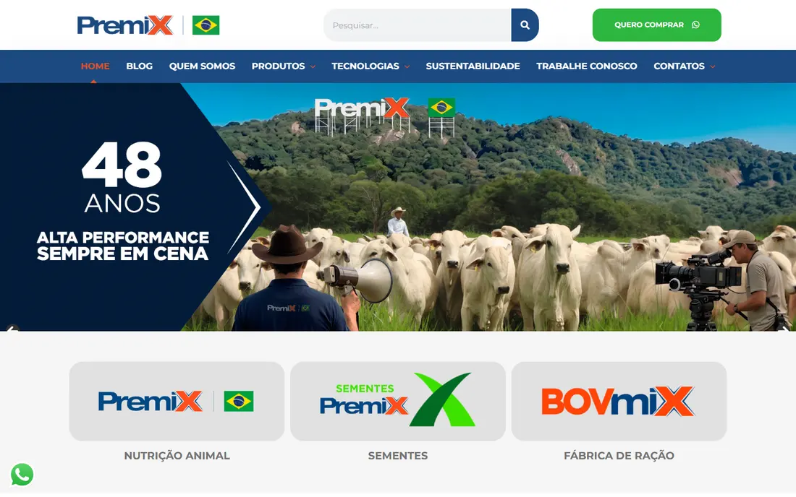

O que o pecuarista pesquisa, e onde a Premix aparece.
Uma leitura feita só com informação pública: o site, o blog, o Google e três marcas do setor.
Vendeminerais, proteinados, rações e aditivos, além de sementesParapecuária de corte e de leite, cavalos, ovinos e caprinosPosição“alta performance”, com a tecnologia Fator P
O placar
Base técnica
Velocidade no celular ≥ 50
Conteúdo em até 2,5 s
Endereço sem “www” abre
http leva para https
Sistema atualizado
Servidor com suporte
Imagens leves
Ser encontrado
Título diz o que faz
Descrição no Google
Dados da empresa
Perguntas e respostas
Arquivo para IAs
Mapa do site em dia
Blog em dia
Converter
WhatsApp na página inicial
Formulário de contato
Contato em cada produto
Onde comprar
Formulário que qualifica
Velocidade no celular
10/100
Abaixo de 50 é ruim.
Até o conteúdo aparecer
15,6 s
O Google considera bom até 2,5 s.
Buscas do setor com o nome Premix
2
Tortuga aparece em 31, Matsuda em 30.
Textos técnicos no blog em 2026
2 de 25
Os outros 23 são notícias da empresa.
1 · Como a Premix aparece hoje

Site atual · computadorCelular
O Google não sabe o que a empresa fazA página inicial se chama “Home - Premix”, não tem descrição nem título principal.
Página inicial pesada11,2 MB e 226 arquivos. São 22 imagens PNG e 4 JPG, nenhuma em formato leve.
Cada produto em dois endereços53 dos 56 produtos têm duas páginas iguais. O Google precisa escolher qual mostrar.
O blog virou mural de notíciasDos 25 textos de 2026, 23 falam de eventos, aniversário e equipe.
“Quero comprar” não qualificaO formulário pede nome, e-mail e celular. Não pergunta rebanho, região nem produto.
Servidor sem suporte de segurançaPHP 8.1, cujas correções de segurança terminaram em dezembro de 2025.
2 · O que o mercado pesquisa e o site não responde
Buscas do setor mapeadas
1.944
Sugestões reais do Google
São perguntas
272
“qual”, “como”, “quanto”…
Querem comprar
120
Preço, saco, onde comprar
Ligadas à época do ano
33
Seca, águas, transição
Marcas que aparecem nas buscas
Buscas que citam a marca
Tortuga
31
Matsuda
30
Guabi
18
Nutron
5
Vaccinar
3
Premix
2
Agroceres
2
Bellman
2
Purina
2
Connan
1
Textos publicados por ano
Textos técnicos no blog, sem notícias
2021
49
2022
83
2023
65
2024
32
2025
26
2026
2
Quem tem texto sobre o que o comprador pesquisa
Tema
Busca real
Premix
Tortuga
Matsuda
Guabi
Proteinado na seca
“qual proteinado usar na seca”
✕
3
3
–
Sal mineral ou proteinado
“sal mineral ou proteinado”
✕
✕
✕
–
Semiconfinamento
“semiconfinamento como funciona”
✕
3
✕
–
Custo do confinamento
“quanto custa um confinamento de gado”
2
3
✕
–
Ração para ovelha
“qual a melhor ração para ovelha dar leite”
✕
✕
1
–
Consumo por cabeça
“quanto de proteinado uma vaca come por dia”
1
✕
✕
–
Nutrição da vaca leiteira
“qual a melhor ração para vaca leiteira de alta produção”
3
1
✕
–
Suplemento para cavalo
“qual suplemento para cavalo”
6
4
✕
–
Creep feeding
“creep feeding e creep grazing diferença”
11
✕
✕
–
Número de textos sobre o tema, contados por nós pelos títulos. ✕ nenhum · – sem área de textos no site.
O que os concorrentes fazem bem
Tortuga214 textos, com dados próprios (o Censo de Confinamento) e um simulador de custo x benefício dos produtos.
MatsudaSó 9 informativos técnicos, mas três sobre a busca mais forte do setor: suplementação na seca. Produtos organizados por fase: cria, recria, engorda e leite.
GuabiSem blog, mas com um localizador de revendas (“onde comprar”) e a ficha técnica de cada produto em PDF.
Perguntas que o pecuarista digita
qual proteinado usar na secaquanto de proteinado uma vaca come por diaquando usar proteinado ou proteico energeticoqual a melhor ração para gado na secaqual o melhor suplemento mineral para gado de cortesemiconfinamento como funcionaquanto custa um confinamento de gadoqual a melhor ração para vaca leiteira de alta produçãocreep feeding e creep grazing diferençaqual suplemento para cavaloqual a melhor ração para ovelha dar leitecomo fazer ração para gado na seca
A Premix tem o maior acervo, mas não responde a busca mais forte do setor. Em proteinado na seca, Tortuga e Matsuda têm três textos cada; a Premix, nenhum. Ninguém responde “sal mineral ou proteinado”. Já em creep feeding e cavalos, a Premix está na frente. A produção técnica caiu de 83 textos em 2022 para 2 em 2026.
3 · Velocidade
Nota do Google, de 0 a 100
CelularComputador
Premix
10
59
Tortuga
5
33
Matsuda
38
70
Guabi
26
66
Até o conteúdo aparecer
No celular. Bom: até 2,5 s
Premix
15,6 s
Tortuga
49,7 s
Matsuda
16,2 s
Guabi
75,5 s
As quatro são lentas no celular, e a Premix fica com nota 10. Só a Tortuga, que está dentro de um site global, tem nota menor.
4 · Conteúdo e redes
Último texto publicado
Meses sem publicar
Premix
09/2026
Tortuga
05/2026
Matsuda
06/2026
Guabi
s/d
Seguidores no Instagram
Número público do perfil
Premix
37 mil
Tortuga
75 mil
Matsuda
58 mil
Guabi
55 mil
A Premix publica com frequência, mas quase só notícia. No Instagram tem 37 mil seguidores, menos que Tortuga, Matsuda e Guabi.
5 · O que o Google e as IAs leem
Premix
Tortuga
Matsuda
Guabi
Título diz o que a empresa faz
✕
✓
✕
✕
Descrição da página
✕
✓
✓
✕
Dados estruturados da empresa
✓
✕
✕
✕
Perguntas e respostas marcadas
✕
✕
✕
✕
Arquivo para assistentes de IA
✕
✕
✕
✕
Endereço sem “www” abre
✓
✓
✓
✓
http leva para https
✓
✓
✓
✓
Imagens em formato leve
✕
✕
✓
✕
Texto novo em 2026
✓
✓
✓
✕
Nenhuma das quatro marca perguntas e respostas para o Google e as IAs. A Premix já informa os dados da empresa; falta o resto.
6 · O que modernizar
Hoje
Proposta
Primeira tela
Banner dos 48 anos e três logotipos
Uma frase que diz o que a Premix faz e um caminho por tipo de rebanho
Imagens
22 PNG e 4 JPG, 11,2 MB no total
WebP, carregando só quando aparecem
Produtos
Cada produto em dois endereços
Um endereço por produto; o outro redireciona
Blog
Notícias e textos técnicos misturados
Notícias à parte; textos técnicos por tema, a partir das buscas
Compra
Formulário com nome, e-mail e celular
Formulário que pergunta rebanho, região e produto
7 · Três oportunidades
1
Responder o que o pecuarista pesquisa
Um calendário de textos a partir das buscas reais, começando por proteinado na seca antes de abril.
Impacto altoEsforço contínuo
2
Arrumar a base do site
Página inicial mais leve, um endereço por produto, título e descrição pensados para o Google.
Impacto altoEsforço médio
3
Qualificar quem quer comprar
Um “Quero comprar” que pergunta rebanho, região e produto, para o contato chegar pronto ao comercial.
Impacto altoEsforço baixo
O que só os dados de vocês respondem
Quem chega ao site, e por qual busca?
Quantos pedidos o “Quero comprar” recebe por mês?
Quais textos do blog trazem visitas hoje?
Quanto tempo leva a primeira resposta?
Próximo passo: uma conversa de 30 minutos.
Mostramos o mapa completo de buscas do setor. Se fizer sentido, montamos um modelo da nova página inicial da Premix, com o catálogo real, para vocês verem a diferença antes de decidir.
Usamos só informação pública. Não tivemos acesso a tráfego, vendas nem a nenhum sistema da Premix.
Notas: Lighthouse, ferramenta do Google, rodado em nosso computador em 14/10/2026, com 3 rodadas no celular e 3 no computador, e o valor do meio. O PageSpeed Insights on-line usa a mesma ferramenta e pode dar alguns pontos de diferença.
A comparação olha só a página inicial de cada empresa. A da Tortuga fica dentro do site global da dsm-firmenich, a da Matsuda é a página do grupo e a da Guabi é o site de bovinos (guabibovinos.com.br).
Concorrentes escolhidas por nós: as três marcas que mais aparecem nas buscas do setor. Se houver outras mais próximas, refazemos.
Buscas: 1.944 sugestões do Google ao digitar, no Brasil, a partir de 15 temas do setor. Mostram que a busca existe; não medimos quantas pessoas buscam nem a posição de cada site.
Conteúdo: 638 textos do blog da Premix, 214 da área de notícias da Tortuga e os informativos da Matsuda, lidos nos próprios sites. A Guabi Bovinos não tem área de textos. A separação entre texto técnico e notícia e a contagem por tema foram feitas por nós, pelos títulos. Ter um texto sobre o tema não quer dizer aparecer primeiro no Google: a posição não foi medida.
Último texto publicado: a data mais recente encontrada no blog ou na área de notícias de cada site. Não encontramos área de textos no site da Guabi Bovinos.
Instagram: números públicos de cada perfil. Não analisamos as publicações.